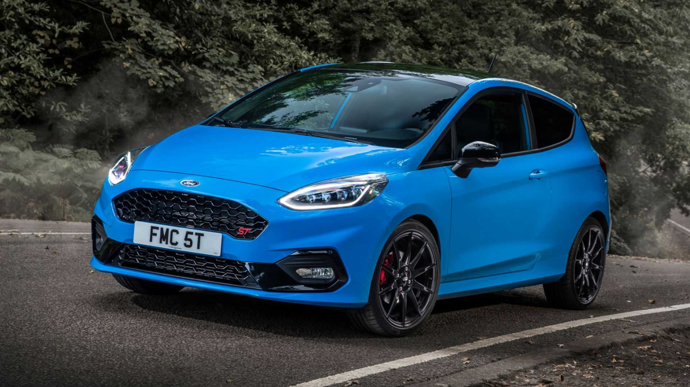

Mon profil
Cliquez-ici pour voir mon LinkedIn
Amoureux de l'automobile et des mobilités depuis mon enfance, j'aime la création digitale, aider, tester, et le contact humain.
Créatif, curieux et ayant le sens de l'écoute, je souhaite étendre mon savoir-faire et mes compétences au sein de votre entreprise.
Créatif, curieux et ayant le sens de l'écoute, je souhaite étendre mon savoir-faire et mes compétences au sein de votre entreprise.
